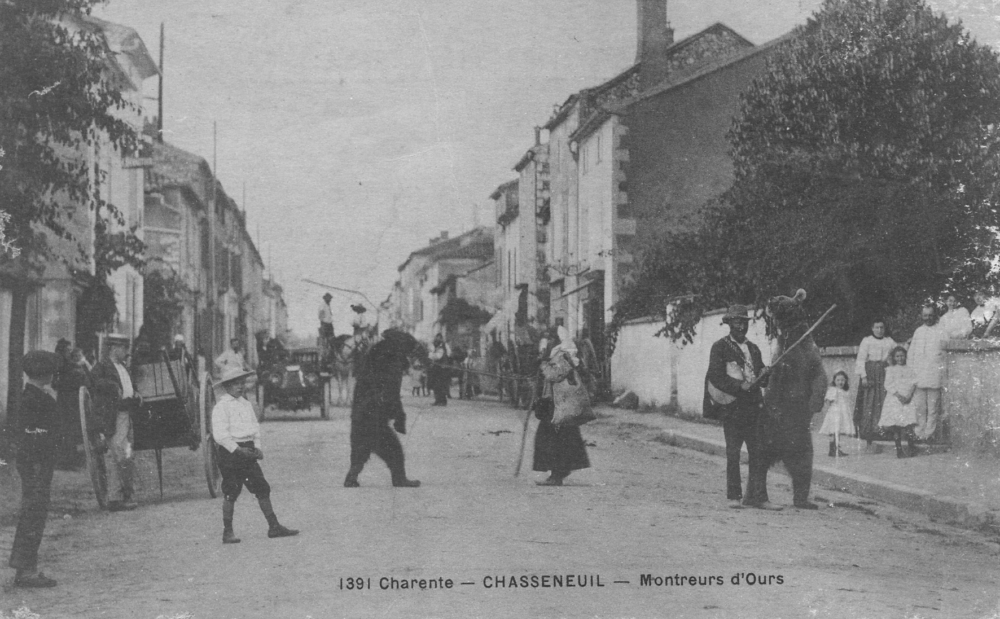
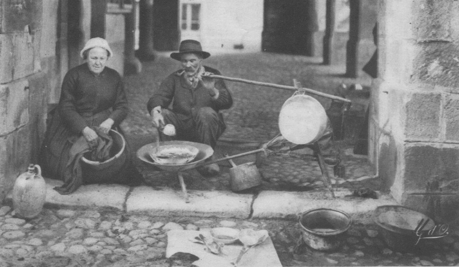
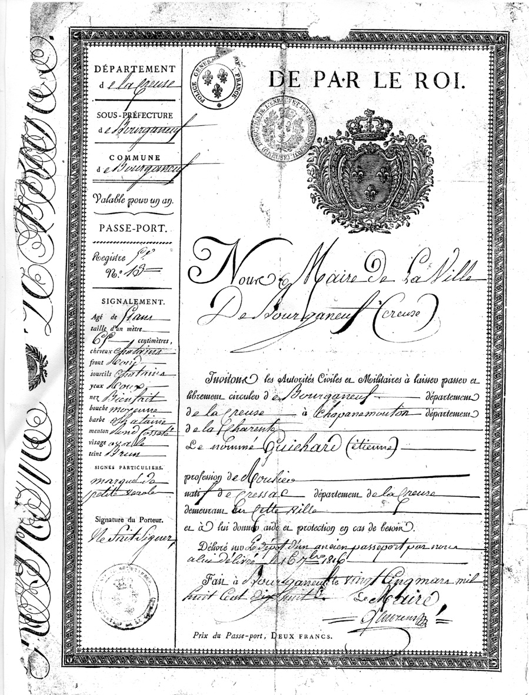

Par Pierre BOULANGER, AGC 321
Une imagerie très naïve, et non dépourvue d’arrières pensés, représente souvent les campagnes comme figées, peuplées d’hommes et de femmes qui ne sortaient jamais de chez eux et ne dépassaient pas les limites de leur jardin. Il faut croire qu’ils n’allaient jamais aux foires, en pèlerinage ou à la noce d’un parent dans une autre paroisse, qui pouvait être parfois éloignée. Les campagnes n’ont jamais été cette mare croupissante que présentent certains. Même si la recherche est difficile, on trouve des documents montrant les incroyables déplacements auxquels se livraient nos ancêtres : bouviers du Confolentais convoyant les troupeaux de bœufs vers les marchés de Sceaux et de Poissy, artisans allant travailler à Bordeaux ou à La Rochelle, faucheurs allant au pays de Lorraine (à une époque où elle n’était pas encore française) pour y exercer leur métier... En sens inverse, on retrouve les traces de marchands de bœufs d’Auvergne menant leurs troupeaux aux foires du Poitou ou de Bretagne, revenant avec des mules ; de rétameurs ou ferblantiers auvergnats et même italiens. Il faut dépouiller longuement les registres paroissiaux, puis d’état civil, les archives des justices seigneuriales et royale, la main courante des gendarmeries. C’est un travail long et ingrat, mais il permet de découvrir tout un monde que les autres sources ignorent le plus souvent.
Il ne faut pas longtemps, si l’on se penche sur certaines sources, pour ruiner une telle idée (encore faut-il avoir l’envie et le courage d’explorer ces sources, souvent difficiles d’accès et toujours très dispersées). Alors on se rend compte que nos ancêtres étaient beaucoup plus mobiles que ce qu’une historiographie crédule et primaire peut laisser croire. C’est bien évident qu’ils se déplaçaient moins que de nos jours, les techniques ne permettaient que des voyages lents, coûteux, fatigants, comportant de nombreux risques (et pas seulement le banditisme mais aussi la réduction en esclavage pour qui se lançait sur la Méditerranée), mais il suffit déjà de quelques rappels pour montrer l’importance de certaines de ces migrations : les croisades, par exemples. Dans les récits qui relatent les hauts faits des croisés il n’est question que de seigneurs (les Lusignan, par exemple) mais c’est faire bon marché de leur environnement. Ils partaient avec un certain nombre de domestiques, d’écuyers, de palefreniers.... dont l’histoire n’a gardé aucune mémoire. Mais ce vide des sources ne veut pas dire que ces gens-là n’ont pas existé.
A une époque plus récente, parler de l’émigration de la noblesse sous la Révolution française en omettant de dire que ces nobles ne partaient pas seuls, mais que cochers, laquais, gardes du corps ou autres domestiques les accompagnaient (la reine Marie-Antoinette emportait même son coiffeur, le divin Léonard, dans ses bagages) est une vue réductrice, très mutilante, de la véritable histoire de l’émigration. Bien sûr, ces gens n’ont pas laissé de souvenirs, n’ont pas écrit leurs mémoires. On sait quand ils sont partis mais absolument rien ou presque sur ce qu’ils sont devenus hors des frontières de la République, s’ils sont revenus sous le Consulat, l’Empire ou la Restauration. Sont-ils morts, pour certains en terre étrangère ; s’y sont-ils fixés, par mariage ou pour toute autre raison, en abandonnant tout espoir de revoir leur pays natal ? Nous l’ignorons, mais ce n’est pas une raison pour faire l’impasse sur le problème et ne pas au moins poser la question, même si on ne peut y apporter de réponse.
On parle longuement du tourisme forcé que l’empereur Napoléon Ier fit faire à ses troupes : « L’Empereur nous mena de Madrid en Espagne à Moscou-t-en Russie » pour reprendre une formule ; mais à d’autres époques la guerre amena des déplacements importants de population, il suffit de penser à la guerre de Cent ans qui repeupla la Saintonge d’immigrants venus de provinces situées plus au nord.
Parmi les exemples que nous avons retrouvés, nous citerons l’exemple d’un marié qui venait de loin :
« L’an mil huit cent vingt-sept, le deux janvier, douze heures du matin, par devant nous François Bouty, adjoint au maire de Lessac… sont comparus Aloyze Hilser, marchand horlogé, âgé de trente-six ans, demeurant à St-Germain, et fils légitime de feu Clément Hilser et de défunte Agathe Hug, demeurant à Gutembach en Almagne, grand duché de Bade, d’une part.
Et Marie Delage, âgé de vingt-deux ans, fille légitime de Jean-François Delage, maître cordonier, et de Anne Rouseau, ses perre et merre ; demeurant ensemble au lieu de Ste-Radegonde, d’une part, les quel nous ont requis de procéder à la célébration du mariage projetté entre heux… aucune opposition audit mariage ne nous ayant été signifiée, faisant droit à leur réquisition… ayant demandé au futur époux et à la future épouse s’ils veulent se prendre pour mari et pour famme, chacun d’eux ayant répondu séparément et affirmativement, déclarant au nom de la loi que Aloyze Hilser et Marie Delage sont unis par le mariage… ». (Etat civil de Lessac1. Archives municipales).
Les témoins sont Français (trois sont de Lessac, et le quatrième, oncle de la mariée, est de St-Germain-de-Confolens). Aucun ne sait signer, pas plus que la mariée, le marié signe d’une grosse écriture de quasi illettré.
Donc un homme venu se perdre dans la Charente profonde et y ayant trouvé une épouse. Peut-être vingt ans après avoir découvert cet acte, un hasard nous a mis en présence d’un descendant de ce couple venu à Lessac faire des recherches généalogiques. Il nous a apporté certains compléments sur l’histoire de son ancêtre. En fait, ce dernier était Polonais, originaire de la partie dépendant du royaume de Prusse (à la suite d’une histoire compliquée, la Pologne s’était trouvée entièrement occupée par le royaume de Prusse et les empires de Russie et d’Autriche). Il avait quitté sa province natale pour aller séjourner dans la Forêt Noire ; c’est peut-être là qu’il apprit le métier d’horloger, puis il vint en France. Y vendait-il ce que l’on appelait les « pendules en bois », mécanismes dotés d’un cadran en bois peint de motifs floraux aux couleurs vives et fabriquées dans cette région ? Après avoir séjourné quelque temps à Lessac après son mariage, il partit pour Marseille pour s’embarquer pour la Nouvelle-Calédonie où il devint gardien au bagne de Nouméa. A l’âge de la retraite, il revint à Marseille où il s’établit et son descendant vivait toujours dans le département du Var.
Une circulaire du ministère de l’Intérieur au préfet de la Charente, en date du 27 juin 1822, évoque le problème des montreurs d’ours ou d’autres animaux :
« Monsieur le Préfet, plusieurs de vos collègues ont signalé, à diverses époques, les conducteurs d’ours comme des hommes dangereux sur lesquels il convient d’exercer une active surveillance. Ces individus ont souvent commis des vols et même des délits plus graves encore, sur des routes peu fréquentées ou dans des campagnes isolées... Je désire, en conséquence, que vous preniez et que vous fassiez publier dans toutes les communes de votre département un arrêté portant injonction aux conducteurs d’ours ou de tous autres animaux malfaisants de suivre les grands chemins sans jamais s’en écarter, avec défense d’aller dans les bourgs et hameaux, d’entrer dans les bois et de se trouver sur les routes avant le lever et après le coucher du soleil... Enfin, vous ordonnerez qu’en cas de vols, violences, mendicité avec menaces ou autres circonstances aggravantes, les conducteurs de bêtes féroces soient mis à la disposition du procureur du roi de l’arrondissement pour être poursuivis correctionnellement ou criminellement, suivant la nature du délit dont ils seront prévenus... »2
Une seule carte postale dans le département évoque ces hommes et leurs bêtes ; elle a été prise à Chasseneuil-sur-Bonnieure avant 1914 3. L’ours paraît être mené par des gitans.
Une informatrice – qui serait plus que centenaire actuellement – nous racontait avoir vu ce spectacle toute petite, et avoir eu une peur terrible quand on l’avait assise quelques secondes sur le dos de l’animal à quatre pattes (muselé évidemment). On croyait par ce moyen donner du courage aux enfants. Cette manifestation s’accompagnait du don de quelques pièces pour le montreur. Ces derniers vendaient aussi des pincées de poils d’ours qui étaient portées comme talisman, attachées au cou, pour écarter les frayeurs. Quand l’ours mourrait, son propriétaire faisait bouillir ses chairs pour en extraire la graisse – qu’il devait mélanger sans doute avec celle d’un autre animal pour augmenter le rendement – qui était vendue en petits pots. Cette graisse passait pour être un remède souverain contre les rhumatismes.
Un rapport de la gendarmerie d’Angoulême 4, qui ne porte que sur une année (1871-1872), permet de se faire une petite idée de ce monde de l’errance, toujours redouté des autorités et des populations. Nous y avons relevé (sauf erreur ou omission) 183 citations de personnes dont l’identité a été vérifiée par les gendarmes.
30 d’entre eux (environ 17 % de l’ensemble) sont d’origine étrangère. L’essentiel du bataillon est fourni par les Italiens5 (13 % de l’ensemble et pratiquement les trois quarts des étrangers). Deux nomades viennent d’Allemagne ; un de Pologne6 ; un autre d’Angleterre ; trois de Belgique et un de l’île de Nassau dans les Antilles (archipel des Bahamas). Comment est-il venu échouer si loin de ses cocotiers nataux ?
Nous avons dressé un tableau de la répartition géographique des lieux de naissance de ceux qui sont de nationalité française. Il permet de voir que les deux tiers de la France se donnaient rendez-vous à Angoulême, du moins cette année-là :
|
Aisne |
2 |
Drôme |
1 |
Loiret |
4 |
Bas-Rhin |
2 |
|
Allier |
1 |
Eure-et-Loir |
2 |
Lot |
4 |
Haut-Rhin |
1 |
|
Ariège |
1 |
Gard |
1 |
Lot-et-Garonne |
2 |
Rhône |
3 |
|
Aube |
1 |
Gironde |
6 |
Maine-et-Loire |
2 |
Seine |
9 |
|
Aveyron |
2 |
Hérault |
6 |
Haute-Marne |
1 |
Seine-Inférieure |
1 |
|
Bouches-du-Rhône |
3 |
Ille-et-Vilaine |
1 |
Mayenne |
1 |
Deux-Sèvres |
1 |
|
Calvados |
3 |
Indre |
2 |
Meurthe7 |
2 |
Tarn |
3 |
|
Cantal |
2 |
Indre-et-Loire |
1 |
Meurthe-et-Moselle |
1 |
Tarn-et-Garonne |
3 |
|
Charente |
8 |
Isère |
2 |
Nord |
3 |
Vaucluse |
1 |
|
Charente-Inférieure |
1 |
Jura |
1 |
Oise |
2 |
Vendée |
2 |
|
Cher |
3 |
Loire |
1 |
Orne |
3 |
Vienne |
2 |
|
Corrèze |
3 |
Haute-Loire |
2 |
Pas-de-Calais |
2 |
Haute-Vienne |
2 |
|
Dordogne |
9 |
Loire-Inférieure |
2 |
Puy-de-Dôme |
11 |
Vosges |
2 |
|
|
|
|
|
Somme |
1 |
Yonne |
4 |
Indéterminés : 3.
Les données portent sur une durée trop courte pour pouvoir en tirer une statistique valable et en déduire l’existence de flux migratoires stables et l’existence d’échanges réguliers entre la Charente et telle ou telle région. Le tableau supra n’est donné qu’à titre indicatif.
Les activités déclarées par ces errants : il s’agit surtout de chanteurs ambulants 8 (34 %) et de musiciens ambulants (27 %).
Parmi les autres activités déclarées, on peut relever :
|
Saltimbanques : 11 |
Géante : 1 |
|
Somnambules 9 : 2 (des femmes) |
Prestidigitateurs : 4 |
|
Double vue : 2 |
Artiste dramatique : 1 |
|
Loteries de porcelaine : 2 |
Artistes d’agilité : 2 |
|
Jeux tournants 10 : 3 |
Chanteuse : 1 |
|
Marchands de chansons : 6 |
Dentistes : 2 (dont un qui tient un cosmorama) |
|
Marchands ambulants : 2 |
Marchand de bonbons : 1 |
|
Théâtre de marionnettes : 1 |
Théréoscopie ( ?) : 1 |
|
Acrobates : 2 |
Miroir fantastique : 1 |
|
Violonistes : 2 |
Artistes lyriques : 2 |
|
Chanteur et marchand de chansons : 2 |
Déclamateur : 1 |
|
Musicien et marchand de chansons : 1 |
Physiciens : 4 |
|
Jeux divers : 2 |
Danseur de corde : 1 |
|
Marchand de bijouterie : 1 |
Illisible : 1 |
|
Joueurs d’orgues (de Barbarie) : 8 |
|

Carte postale expédiée en 1912 (coll. particulière).

Rétameur auvergnat (coll. particulière).
Quelques autres textes extraits des Archives départementales de la Charente (4 M/45) évoquent certains de ces errants. Un arrêté préfectoral du 22 août 1882 ordonne aux brigades de gendarmerie de l’ensemble du département de faire la chasse aux nomades et des les expulser ; ce qui nous vaut quelques rapports et notations sur l’origine géographique ou la nationalité de quelques-uns de ces errants, de cette marge en marche qui inquiétait toujours les populations et les autorités.
29 Octobre 1886. Expulsion du département des 3 frères Rossi, arrêtés à Brigueuil, des Italiens originaires de Bedonnia, province de Parme.
28 mars 1886. A Champagne-Mouton, la brigade de gendarmerie arrête une bande composée de 3 hommes, 3 femmes, 4 enfants, une voiture attelée, 2 ânes, 2 ours et un singe, venant tous de Bosnie, avec passeport délivré en 1885 à Bayonne.
1er avril 1886. A Confolens : expulsion d’un couple avec 3 enfants, des chanteurs ambulants venant de Borgotaro, province de Parme (Italie), avec un passeport délivré dans l’Aude.
3 juillet 1886. A Confolens, deux bandes de nomades sont expulsées. Elles viennent de St-Junien et ont pourtant l’autorisation écrite d’exercer leur profession signée de la main du commissaire de police de Confolens. Ces Italiens sont musiciens ambulants. Leur passeport a été délivré par le consulat italien au Havre.
11 septembre 1885. Chasseneuil : expulsion d’une bande de 7 personnes, avec des ours. Ils sont pourtant en règle et munis de passeports. Ils sont d’origine turque11.
13 mai 1886. A Taponnat, la gendarmerie de Chasseneuil arrête une bande de nomades, se dirigeant vers Limoges, composée de 2 hommes, 2 femmes, 8 enfants, tous Turcs, accompagnés de 2 ours et 2 singes.
Quelques autres témoignages, toujours très dispersés, peuvent éclairer le sujet. On peut trouver des exemples dans l’état civil. Nous en citerons juste un, mais une recherche – qui serait très longue – permettrait de multiplier les cas : le 25 août 1901 est déclarée en mairie de Confolens la naissance de Marcellin Cékaroli « né à Confolens, allées de Blossac, dans la voiture de ses père et mère, fils de Charles-Simon Cékaroli, âgé de quarante ans, marchand, et de Marie Robin, son épouse12, âgée de quarante-un ans, sans profession, domiciliés à Saint-Philibert-de-Grandlieu (Loire-Inférieure) ».
Les deux témoins sont François-Théophile Lazeyras, « marchand loteur », de Limoges, et Léon Clorius, marchand forain à Saint-Yrieix. Nous sommes ici plongés dans le monde des forains et marchands venus à la foire de la Saint-Barthélemy à Confolens, qui commençait le 23 août et pouvait se prolonger sur un ou deux jours. C’était la plus célèbre foire de l’année : foire grasse et fête foraine en même temps, qui attirait – disait la presse de l’époque – beaucoup de voleurs.
Quelques témoins matériels gardent la trace de ces errants. A Massignac13 est décédée en 1923 une petite gitane, fille d’un vannier ambulant. Elle fut enterrée dans le cimetière et sa tombe est marquée par un décor de gros coquillages que les intempéries rongent peu à peu ; à chaque fête de la Toussaint cette sépulture est fleurie.
Il y aurait une source précieuse pour l’étude d’un tel sujet : la main courante des brigades de gendarmerie. Malheureusement, ces documents n’ont pas été conservés pour tout le XIXe siècle et il faut aller à Maisons-Alfort (Val-de-Marne) pour consulter ceux qui existent encore14.
Nous voudrions évoquer d’autres sources et montrer quelques exemples (car toute prétention à l’exhaustivité dans ce domaine ne peut être que ridicule) prouvant qu’en Confolentais on connaissait des migrations : des gens partaient, d’autres passaient, et tout ce monde n’a laissé que des traces extrêmement ténues qu’il faut aller débusquer un peu partout. Dans son registre paroissial, en 1611, le desservant de Saint-Maurice-des-Lions relate en quelques phrases sèches le « voyage » (pèlerinage) qu’il fit à Saint-Jacques de Compostelle en Galice :
« L’an de frâce mil six cent et unze & le 12 avril, moy soubsigné recteur en l’église de St-Maurice-des-Lyons, estant accompagné de Maurice Tiffonnet & de Maurice Mayne de ladite parroisse de St-Maurice, fismes un voyage de Monseigneur St-Jacques à Compostelle & fusmes de retour le 16 juin audit an. Brillevard, prêtre, recteur de St-Maurice. 1611 »15
Le recteur est donc parti accompagné. Il nous donne la durée de ce pèlerinage, environ neuf semaines, mais il ne dit rien sur ce qui s’est passé, sur les difficultés, les hommes rencontrés, le séjour et les dévotions au sanctuaire du Matamoros (le tueur de Maures, car tel était le surnom de saint Jacques). Ses compagnons et lui, sont-ils revenus portant des coquilles Saint-Jacques cousues sur leurs vêtements, ce qui était le signe distinctif des jacquaires ? Nous restons sur notre faim. Quelques décennies plus tard, Louis XIV va réglementer de façon drastique ces pratiques et rendre difficile la sortie du royaume pour les candidats au voyage de Compostelle.
Le dépouillement des registres paroissiaux ou de l’état civil permet de retrouver quelques traces de gens de passage, qui meurent loin de leur foyer, ou la mention de ceux qu’un mariage fixe en Confolentais : un colporteur auvergnat, comme ce Cassan qui va être l’ancêtre d’une famille de commerçants qui fut importante à Confolens. On retrouve quelques Bretons, mais le contingent le plus important est bien celui des Auvergnats qui conduisaient des troupeaux de bovins aux foires de Verteuil et du Poitou et en ramenaient des mules qu’ils revendaient jusqu’en Dauphiné.
M. Sébastien Jahan s’est intéressé aux migrants du travail et à relevé dans les registres paroissiaux du nord de la Vienne quelques mentions d’originaires du Confolentais et du Limousin qui y allaient pour les moissons. C’est à peu près les seules traces que l’on retrouve d’eux 16. Ces gens partaient en équipes, comme le faisaient encore dans les années 1960 ceux qui allaient vendanger dans le Cognaçais et qui venaient des régions de Montembœuf, de Rochechouart et de Châlus.
Pour retrouver la trace des bouviers qui partaient du Confolentais et menaient vers les marchés de la région parisienne (Sceaux et Poissy) des troupes de bœufs, ce n’est pas à leur point de départ qu’on peut espérer trouver des témoins de leur existence. Une recherche longue et minutieuse permettrait de les retrouver tout le long de leur itinéraire et à leur arrivée, en recherchant dans les registres paroissiaux, dans les archives des hôpitaux, dans les dossiers des justices locales où peut se retrouver la trace de conflits dus aux divagations du bétail, même peut-être dans les archives notariales (location de pacages pour héberger les troupeaux en transit). On imagine sans peine l’ampleur du travail.
M. Sébastien Jahan, en collaboration avec M. Emmanuel Dion, a retracé dans un autre ouvrage les extraordinaires et complexes migrations des bûcherons et charbonniers venus du Berry qui gagnaient les forges du Poitou et du nord de l’Angoumois et qui exerçaient leurs activités dans les grandes forêts de ce secteur, notamment la forêt dite de Saint-Germain, dans la paroisse d’Abzac. Ces deux auteurs ont réussi à reconstituer (mais pas pour tous, faute de documentation) les allées et venues de ces hommes, qui se mariaient parfois en cours de route, dont les enfants naissaient au hasard des chantiers dans la loge qui servait d’habitation, et dont la vie était faite d’errances, entrecoupées de séjours plus ou moins prolongés dans une coupe de bois 17.
Certains registres paroissiaux nous ont permis de retrouver la trace de maçons venus exercer en Confolentais, ou de passage, revenant d’une campagne vers La Rochelle. Ils étaient pratiquement tous originaires des paroisses qui bordent l’actuel lac de Vassivières en Haute-Vienne.
Un autre type de documents – qui à notre connaissance n’a guère été exploité en Charente dans cette optique - , c’est le passeport, papier obligatoire au XIXe siècle, qui était délivré par les maires qui gardaient dans leur archives la partie gauche du document, servant de talon et de preuve, et délivraient à l’intéressé la partie la plus grande, la droite, qui devait être soigneusement conservée pour être montrée à toutes les réquisitions de la gendarmerie ou des autorités municipales. Il n’est pas très fréquent de retrouver des passeports dans des archives publiques ; quelques fonds d’archives privées en ont conservé de rares exemplaires.
A peu près la seule en Confolentais, la commune de Lesterps a conservé un stock de talons de passeports pour une période allant du 14 mai 1837 au 24 octobre 1852, sans que nous puissions être sûr que le collection est complète. Dans le temps, ils se répartissent ainsi :
|
1837 |
1838 |
1839 |
1840 |
1841 |
1842 |
1843 |
1844 |
1845 |
1846 |
1847 |
1848 |
1849 |
1850 |
1851 |
1852 |
|
1 |
4 |
6 |
4 |
3 |
4 |
4 |
5 |
9 |
1 |
6 |
2 |
1 |
1 |
5 |
6 |
A 62 reprises (au minimum) le maire de Lesterps a délivré un passeport, mais seulement 60 personnes sont concernées car c’est à deux reprises que Charles de Rocquard, propriétaire, sollicite la délivrance d’un tel document : le 14 avril 1837 pour se rendre à Amiens dans la Somme ; le 6 novembre 1842 pour aller à Bordeaux ; et qu’un aveugle désire se rendre à Paris.
Ces 60 personnes sont toutes des hommes, à une seule exception près : Joséphine Abonnet, marchande ambulante, née à Paris, 43 ans, sans domicile fixe, en sollicite un pour se rendre à Poitiers.
Sur ces documents sont toujours portées un certain nombre d’indications, mais il y a eu parfois des oublis. Normalement l’âge est toujours signalé, et une récapitulation permet de dresser le tableau suivant (en éliminant les doublons) :
|
Moins de 20 ans |
de 20 à 29 ans |
de 30 à 39 ans |
40 ans et plus |
|
11 (18 %) |
25 (41 %) |
9 (14 %) |
11 (20 %) |
Sans indication d’âge : 4.
On voit donc que ce sont les éléments jeunes qui sont largement majoritaires. Le plus jeune des impétrants est François Sallas, 14 ans, qui va à Limoges ; le plus âgé est Pierre Reix, 60 ans, laboureur, qui se rend à Rochefort ; l’éventail reste donc largement ouvert.
Vu l’âge de certains, se pose le problème du service militaire, et ce cas est évoqué dans deux documents : le premier octobre 1845 Louis Rouyer, de la classe 1843, sollicite la délivrance d’un passeport pour se rendre à « Verdun en Gironde »18 ; sur le passeport est écrit : « compris dans le contingent de la classe 1843 » pour lui éviter d’être pris pour un déserteur. Le 15 mars 1847, Sylvain-Alfred Pommier, maçon, classe 1846 « ayant eu au tirage le n° 115 & devant se présenter devant le conseil de révision », né à Brillac, demeurant à Lesterps, projette de partir pour Rochefort.
Un signalement – grossier par la force des choses et qui le restera jusqu’à la généralisation des photos d’identité – est toujours porté sur le talon du passeport. Nous avons retenu comme exemple celui d’un étudiant en médecine, Henry Delagarde, 21 ans, qui va à Montpellier poursuivre ses études : 1,68 m ; « cheveux châtain foncé ; sourcils idem ; front rond ; yeux ronds ; nez bien fait ; bouche moyenne ; barbe châtain foncé ; menton à fossette ; visage oval ; teint ordinaire »19 Il s’établira plus tard à Confolens et sera même médecin des épidémies de l’arrondissement de 1841 à 1881. C’est lui qui procurera la première édition de la Chronique de Brigueuil écrite par son ancêtre Pierre Vaslet.
D’autres indices sont portés sur ces passeports : deux ont été sollicités par un aveugle. Le 31 novembre 1838, Ambroise-Laurent Rémy, né à Guéret en Creuse, demeurant à St-Denis près de Paris, sans mention de profession mais « signes particuliers : aveugle de naissance » et qui désire retourner à Paris. S’il est accompagné par un guide, ce dernier n’a pas sollicité de passeport du maire de Lesterps ; peut-être en possédait-il un délivré par une autre municipalité ? Le 15 octobre 1839, il réitère sa demande : soit son premier départ a été annulé, soit il est revenu de Paris entre-temps. L’absence de mention de profession ne permet pas de deviner les causes de ces voyages.
Le 23 septembre 1852, Pierre Morichon, avocat, veut se rendre à Paris. Son passeport mentionne : « difformité au 4e doigt de la main droite » Il fut maire de Lesterps et le grand-père maternel de Léonide Babaud-Lacroze, historien et homme politique confolentais.
En 1841, Romuald Rémy, garçon tailleur d’habits, né à Angoulême, veut gagner Paris. Comme il est qualifié de « claudiquant de la jambe droite » le voyage ne dut pas être facile sauf s’il eut les moyens de faire une partie du trajet en diligence, mais les avait-il ?
La taille des demandeurs de passeport est toujours citée. Cette mention offre peu d’intérêt de nos jours car il est une bien meilleure source pour connaître cette donnée et établir des statistiques sur ses variations : c’est l’ensemble des registres de conscription.
Les professions sont presque toujours notées :
|
Propriétaires |
2 |
Garçon marchand de gravier |
1 |
|
Etudiant en médecine |
1 |
Négociant |
1 |
|
Docteur en médecine |
1 |
Elève en pharmacie |
1 |
|
Terrassiers |
11 |
Marchande ambulante |
1 |
|
Garçon boulanger |
1 |
Ex-huissier de police |
1 |
|
Menuisiers |
2 |
Tailleur d’habits |
1 |
|
Maréchaux-ferrants |
3 |
Journalier |
1 |
|
Charpentiers |
2 |
Praticien |
1 |
|
Garçon tailleur d’habits |
1 |
Manoeuvre |
2 |
|
Serrurier |
1 |
Tailleur de pierre20 |
1 |
|
Maçons |
9 |
Commis marchand |
1 |
|
Laboureur |
1 |
Avocat |
1 |
|
Cultivateur |
1 |
Sans précision |
7 |
On voit donc que l’agriculture et le commerce sont peu représentés, qu’il s’agit surtout d’artisans (menuisiers, charpentiers, maréchaux-ferrants) et d’une importante proportion de maçons et de terrassiers. Les maçons sont tous demeurant à Lesterps et nés dans ce même lieu ou non loin (Brillac, Le Vigeant) ; par contre si, certains terrassiers sont bien originaires de Lesterps ou des environs, on découvre une petite colonie vellave venant de la Haute-Loire : les deux frères Saby, venant de Champagnac21 et y retournant, les deux frères Porte originaires de la même commune, et un Auvergnat, Pierre Hospital, natif de Vals dans le Puy-de-Dôme et y retournant (1838/1839). Pour expliquer leur présence, on peut envisager les travaux de réfection d’une digue d’étang, tâche qui attirait souvent de la main d’œuvre lointaine comme le montrent d’autres exemples, mais ceci reste une supposition.
On voit que les professions intellectuelles sont aussi représentées. En plus des étudiants en médecine et en pharmacie (Jean Dumas, né à Lesterps, va à Paris) on y rencontre le docteur en médecine Marc-Antoine-Philippe de La Biche, 31 ans, né à Bussière-Poitevine, demeurant à Lesterps, qui se rend à Paris en 1850.
On demande aux impétrants de signer leur passeport : 22 s’exécutent. Pour les autres il est marqué : Néant ou Ne sait [signer]. Il est à remarquer que l’usage de la croix pour remplacer la signature est pratiquement inconnu en Confolentais, à toutes les époques. Savent signer évidemment tous ceux qui exercent une profession intellectuelle ou commerciale, mais aussi presque tous les artisans, même si la signature reste peu assurée et révèle une pratique de l’écriture mal dominée, comme c’est le cas pour un des maréchaux-ferrants. Le contingent des illettrés est fourni par les manœuvres, journaliers, maçons et terrassiers dont aucun ne sait signer.
La date de délivrance de ces passeports ne se répartit pas n’importe comment au cours de l’année :
|
J |
F |
M |
A |
M |
J |
Jt |
A |
S |
O |
N |
D |
|
2 |
3 |
20 |
9 |
4 |
3 |
3 |
1 |
7 |
7 |
4 |
1 |
On voit donc l’importance des départs au printemps : certains s’exilent pour aller travailler, d’autres repartent à l’automne. Sur les onze passeports délivrés à des terrassiers, six l’ont été en mars-avril-mai-juin. Les départs d’été sont très limités.
Les destinations : c’est peut-être ce qui est le plus intéressant dans ce qui est porté sur ces passeports :
Sont cités une seule fois : Amiens, Vichy, Montpellier, Vals, Poitiers, l’Ile d’Oléron, Verdun en Gironde, Orléans et Felletin. Dans ce qui reste dominent trois pôles : Angoulême (7 occurrences), Paris et Saint-Denis (9 occurrences), et la Charente-Inférieure : 22 occurrences, dont Matha (2), Saintes (2), Saint-Jean-d’Angély (3), Le Rochelle (3) et surtout Rochefort (12). Le grand port de la côte charentaise offrait de nombreux emplois aux terrassiers, manœuvres, charpentiers, maçons.... qui s’y rendaient de tous les départements proches et même de plus loin.
Les conditions matérielles de ces voyages nous restent largement inconnues. On peut inférer du fait que certains passeports pour la même destination sont délivrés à des dates très proches que leurs porteurs se regroupaient pour mieux faire face aux aléas du voyage : le 22 juillet 1842 on délivre un passeport à Pierre Labracherie, menuisier, et Laurent-Théotime Rémy, serrurier, pour se rendre à Paris ; le 3 mars 1843 Jean Pommier, maçon, et Sylvain de Villevalois reçoivent leur passeport pour Saintes ; en mars 1844 quatre passeports sont délivrés (dont 3 le 13) à des terrassiers et des maçons pour se rendre l’un à St-Jean-d’Angély et les trois autres à Rochefort....
Une note (sans date, années 1840 ?) présentée par Morichon, garde champêtre à Lesterps, intitulée « Note de la dépance que jet faite pour l’aller et la venue d’Engoulême », laisse entrevoir les conditions matérielles de ces déplacements à pied. Pour une raison qui n’est pas précisée, la municipalité l’envoie au chef-lieu du département. Il part de Lesterps et prend son petit déjeuner à Manot, son repas de midi (dîner) à Chasseneuil et le repas du soir (souper) et le gîte à La Rochefoucauld. Le lendemain, il déjeune à l’Echalote (commune de Brie-La-Rochefoucauld) puis se rend à Angoulême où il passe une deuxième nuit. Lors de son retour, le lendemain, il prend le petit déjeuner à l’Echalote, le repas de midi à La Rochefoucauld, le repas du soir et la nuitée à Fontafie. Le lendemain il s’arrête à Manot pour casser la croûte, passer le bac (8 centimes) et regagner Lesterps par Saint-Maurice-des-Lions. Il est à remarquer qu’à l’aller il n’est pas question de ce bac, peut-être Morichon est-il passé par Confolens ? Chaque jour il a bu une chopine de vin ; le tout se monte à 20,10 francs pour quatre journées, et dont il attend le remboursement. On voit donc qu’un bon marcheur pouvait couvrir en une journée environ les deux tiers de la distance entre Lesterps et Angoulême, mais nous ignorons en quelle saison et si les journées étaient longues ou courtes et de quelles conditions météorologiques il a bénéficié, ce qui pouvait influer grandement sur la vitesse des déplacements.
*******************

Passeport daté du 16 septembre 1816 autorisant le roulier Etienne Guichard à se rendre de Bourganeuf dans la Creuse à ‘Chapane-Mouton’ en Charente. Au dos, une mention complémentaire du maire de Champagne-Mouton lui permet d’aller à Poitiers.
Dimensions de l’original : 27 cm x 36,5 cm.
Archives départementales de la Charente, J/431.
1 Lessac, canton de Confolens-Nord, arrondissement de Confolens.
2 Archives départementales de la Charente, M/641.
3 Il en existe une édition avec une légende erronée : « Chasseneuil, Charente-Inférieure ».
4 Archives départementales de la Charente, 4 M/44.
5 Nous avons déjà étudié le cas d’un musicien niçois d’origine italienne, un vielleux ambulant, dans : boulanger (Pierre), Un homme-orchestre ambulant dans la région Poitou-Charentes, Bulletin d’Etudes Folkloriques du Centre-Ouest, n° 172, sept-oct. 1992. Nous avons découvert le personnage en juillet 1991 lors de l’exposition : « Sansougna, la vielle à roue dans les Alpes méridionales » au musée de Montluçon. Grâce au commissaire de cette exposition, M. Jean-Loup Fontana, conservateur départemental des Alpes-Maritimes, nous avons pu avoir accès au carnet de Giovanni Conte où ses différentes campagnes sont retracées. Deux cartes postales le représentent, une prise en Creuse : « hommes orchestre creusois » ; l’autre légendée « M. Conte Jean, musicien de passage dans les Vosges ». Cf. Cahier des Alpes-Maritimes, n° 9, 1991, 96 pages.
Voir aussi, de l’auteur : « Au bonheur des gammes. Les expressions musicales à Confolens d’autrefois à aujourd’hui » Bulletin des Amis du Vieux Confolens, n° 87, juin 2004.
6 Ce cas pose problème, puisque officiellement la Pologne n’existait plus en tant qu’entité politique, partagée qu’elle était entre la Prusse et les empires de Russie et d’Autriche-Hongrie.
7 Ce département (chef-lieu Nancy) n’existe plus. Il fut cédé en partie à l’Allemagne en 1871. Les parties reprises à l’Allemagne par la suite furent incorporées au département de la Moselle pour former la Meurthe-et-Moselle.
8 L’un d’eux se déclare en même temps teinturier.
9 Ce que l’on appelait des dormeuses, des sortes de pythies modernes qui délivraient un message an balbutiant au cours de leur sommeil (vrai ou simulé ?) et qu’une aide interprétait avant de le délivrer à la personne qui voulait se rassurer sur son avenir.
10 « où on gagne à tous les coups » est-il précisé.
11 Comme à cette époque la Turquie occupait encore un territoire beaucoup plus important que celui qu’elle possède maintenant en Europe, ces « Turcs » seraient peut-être classés dans une autre nationalité de nos jours.
12 Mention erronée : le petit Marcellin va être reconnu par ses parents lorsqu’ils vont se marier à Poitiers le 9 septembre 1903 (mention marginale, état civil de Confolens).
13 Arrondissement de Confolens, canton de Montembœuf.
14 Il y a quelques années, ils pouvaient être consultés au Blanc (Indre) mais cette possibilité n’existe plus.
15 Saint-Maurice-des-Lions. Registre paroissial. Arch. dép. Charente.
16 JAHAN (Sébastien), « La route des métives. Les travailleurs saisonniers des confins marchois en Loudunais (XVIIe – XVIIIe siècles) », Bulletin du Groupe de Recherches Historiques et Archéologiques de L’Isle-Jourdain (GRHAIJ), n° 11, 2001, p. 29 – 41. Le Chantrezeau qu’il cite est certainement Chantrezac, ancienne paroisse aujourd’hui incluse dans la commune de Roumazières-Loubert.
17 JAHAN (Sébastien), DION (Emmanuel), Le Peuple de la forêt. Nomadisme ouvrier et identités dans la France du Centre-Ouest aux temps modernes, Presses Universitaires de Rennes, 2003, 271 p.
Ils citent Abzac, Brillac, Nieuil, Confolens, Lessac, Oradour-Fanais, Roussines, Pleuville, Suris, Saint-Laurent-de-Céris, la forêt de Saint-Germain-de-Confolens.
18 Verdun-sur-Garonne, dans le Tarn-et-Garonne ?
19 Passeport délivré le 20 octobre 1838.
20 C’est le seul qui soit accompagné de sa femme.
21 Champagnac-le-Vieux, arrondissement de Brioude, canton d’Auzon, Haute-Loire.